Note
Go to the end to download the full example code.
Spectrograms & Overtones
import numpy as np
import matplotlib.pyplot as plt
import matplotlib.patches as patches
from pitchtypes import Enharmonic, Spelled
from muprocdurham import sound as s
# # Spectrograms & Overtones
for f in ["piano.wav", "hammond.wav", "piano_C.wav", "hammond_C.wav"]:
print(f)
wave = s.load(f)
s.audio(wave)
s.spectrogram(wave, ylim=10000)
- 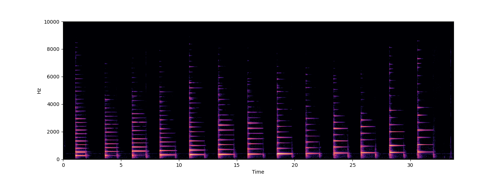
- 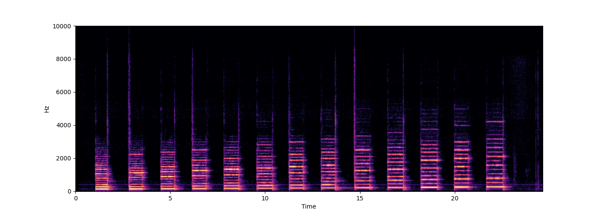
- 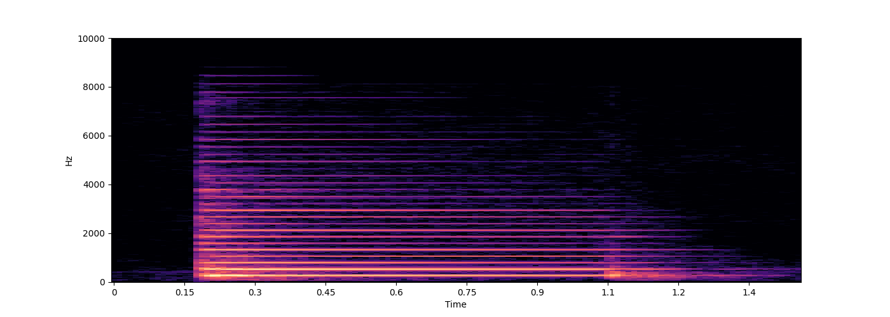
- 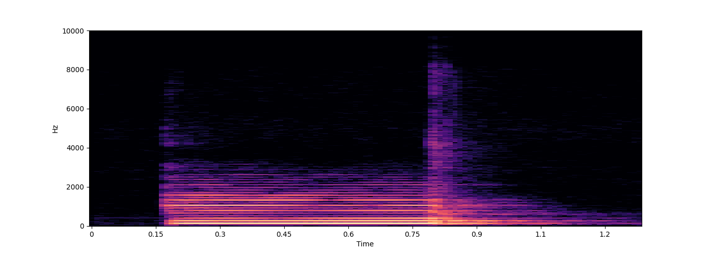
piano.wav
<IPython.lib.display.Audio object>
hammond.wav
<IPython.lib.display.Audio object>
piano_C.wav
<IPython.lib.display.Audio object>
hammond_C.wav
<IPython.lib.display.Audio object>
waves = []
for i in range(1, 15):
wave = s.sound(([i * 440], [np.exp(-i/2)]), duration=0.3)
wave = s.render(wave, normalise=False)
waves.append(wave)
for name, wave in [
("partials", s.render(np.concatenate(waves))),
("natural tone", s.render(sum(waves))),
]:
print(name)
s.audio(wave)
s.spectrogram(wave, ylim=7000, figsize=(5, 2))
s.spectrogram(wave, ylim=7000, figsize=(5, 2), y_axis='log')
- 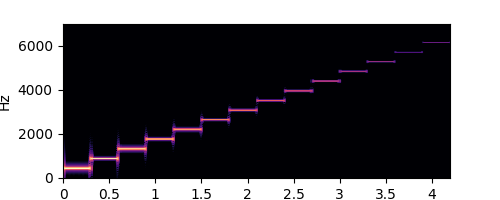
- 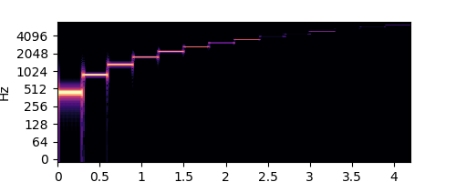
- 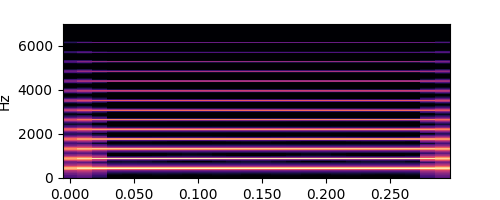
- 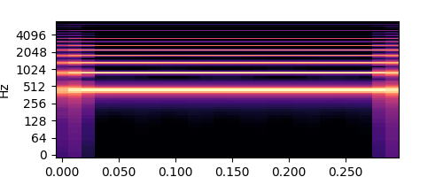
partials
<IPython.lib.display.Audio object>
natural tone
<IPython.lib.display.Audio object>
for name, seq in [
# [440, 660, 880],
("Chromatic Scale", [Enharmonic.Pitch(i).freq() for i in range(69, 82)]),
]:
print(name)
waves = []
for f in seq:
wave = s.harmonic_tone(f, duration=0.2)
wave = s.render(wave)
waves.append(wave)
wave = np.concatenate(waves)
s.audio(wave, fade=False)
s.spectrogram(wave)
# ## Piano Plot
Chromatic Scale
<IPython.lib.display.Audio object>
def plot_freq(f, y, ax, color, label, print_label=False, audio=False):
x = np.log(f)
ax.plot(x, y, marker='|', markersize=10, color=color)
ax.text(x, y + 0.03, label, fontsize=12, color=color, va='bottom', ha='center')
if print_label:
print(label)
if audio:
s.audio(s.render(s.sound(f)))
def map_to_octave(factor):
n = 0
res_factor = factor
while res_factor > 2:
res_factor /= 2
n += 1
m = 0
while res_factor < 1:
res_factor *= 2
m += 1
return n, m, res_factor
def mult_fract(factor, exponent=1, num=1, den=1):
if exponent > 0:
num *= factor ** exponent
if exponent < 0:
den *= factor ** -exponent
return num, den
def frac_label(factors, exponents):
num, den = 1, 1
for f, e in zip(factors, exponents):
num, den = mult_fract(f, e, num=num, den=den)
label = f"{num}"
if den > 1:
label += f"/{den}"
return num, den, label
fig, ax = plt.subplots(figsize=(20, 5))
pitch_range = (60, 72)
# plot piano keys
black_key_width = np.log(np.power(2, 1 / 12))
white_key_width = np.log(np.power(2, 1 / 7))
for p in [Enharmonic.Pitch(i) for i in range(pitch_range[0], pitch_range[1] + 1)]:
f = np.log(p.freq())
c_step = ((int(p) * 7) + 1) % 12
if c_step < 7:
c = 'white'
width = white_key_width
y_offset = 0
z_order = 0
chromatic_steps = int(p) % 12
diatonic_steps = {1:0, 3:1, 5:2, 0:3, 2:4, 4:5, 6:6}[c_step]
chromatic_offset = chromatic_steps * black_key_width
diatonic_offset = diatonic_steps * white_key_width
x_offset = black_key_width / 2 - diatonic_offset + chromatic_offset
else:
c = 'gray'
width = black_key_width
x_offset = black_key_width / 2
y_offset = 0.2
z_order = 1
ax.add_patch(patches.Rectangle((f - x_offset, y_offset), width, 1 - y_offset,
linewidth=1, edgecolor='black', facecolor=c,
zorder=z_order))
# set ticks and limits
ticks = [Enharmonic.Pitch(i) for i in range(pitch_range[0], pitch_range[1] + 1)]
tick_locs = [np.log(p.freq()) for p in ticks]
tick_names = [str(p.to_class()) for p in ticks] # pitch classes
# tick_names = [str(p) for p in ticks] # with octave
ax.set_xticks(ticks=tick_locs, labels=tick_names)
ax.xaxis.set_ticks_position('top')
ax.set_xlim(min(tick_locs) - black_key_width / 2, max(tick_locs) + black_key_width / 2)
ax.set_ylim(0, 1)
ax.set_yticks([])
# fundamental
f0 = Enharmonic.Pitch(60).freq()
plot_freq(f0, 0.9, ax, 'red', 'f0')
# overtones
print("Overtones")
for factor in [2, 3, 5, 7, 9, 11, 13]:
n, m, res_factor = map_to_octave(factor)
label = f"{factor}"
if n > 0:
label += f"/{2**n}"
f = f0 * res_factor
plot_freq(f, 0.9 - 0. * n, ax, 'red', label)
# thirds and fifths (just intonation)
print("Just Intonation")
for fifths_thirds, y in [
([(0, 0), (1, 0), (-1, 0), (0, 1), (0, -1)], 0.75),
([(2, 0), (-2, 0), (1, 1), (1, -1), (-1, -1), (-1, 1)], 0.65),
([(0, 2), (0, -2), (2, 1)], 0.55),
]:
for fifths, thirds in fifths_thirds:
factor = 3**fifths * 5**thirds
n, m, res_factor = map_to_octave(factor)
num, den, label = frac_label([3, 5, 2, 2], [fifths, thirds, -n, m])
plot_freq(f0 * res_factor, y, ax, 'green', label + f"\n({fifths},{thirds})")
# fifths (Pythagorean)
print("Pythagorean")
for fifths_range, y in [(range(-6, 6), 0.4), ([12, 6], 0.2)]:
for fifths in fifths_range:
n, m, res_factor = map_to_octave(3**fifths)
num, den, label = frac_label([3, 2, 2], [fifths, -n, m])
plot_freq(f0 * res_factor, y, ax, 'blue', label + f"\n({fifths})")
# # Pitch Similarity
Overtones
Just Intonation
Pythagorean
def compare_pitches(freqs, sequence=True, chord=True, spec=None, audio=True, **kwargs):
freqs = [Enharmonic.Pitch(f).freq() if isinstance(f, str) else f for f in freqs]
waves = [s.harmonic_tone(f, **kwargs) for f in freqs]
parts = []
if sequence:
parts += [s.render(w) for w in waves]
if chord:
parts += [s.render(sum(waves))]
wave = np.concatenate(parts)
if spec is not None:
spec_kwargs = {**dict(ylim=10000), **dict(spec)}
s.spectrogram(wave, **spec_kwargs)
if audio:
s.audio(wave)
def morph(time, f1, f2, decay=1, n=20):
freqs = np.zeros((len(time), 2 * n))
amps = np.zeros_like(freqs)
for i in range(n):
freqs[:, i] = f1 * (i + 1)
amps[:, i] = np.exp(-i * decay) * np.linspace(1, 0, len(time))
freqs[:, i + n] = f2 * (i + 1)
amps[:, i + n] = np.exp(-i * decay) * np.linspace(0, 1, len(time))
return freqs, amps
def move(time, f1, f2, decay=1, n=20):
freqs = np.zeros((len(time), n))
amps = np.zeros_like(freqs)
for i in range(n):
freqs[:, i] = np.linspace(f1, f2, len(time)) * (i + 1)
amps[:, i] = np.exp(-i * decay)
return freqs, amps
for f1, f2 in [
(Enharmonic.Pitch("C4").freq(), Enharmonic.Pitch("C#4").freq()),
(Enharmonic.Pitch("C4").freq(), Enharmonic.Pitch("C5").freq()),
]:
print("---")
compare_pitches([f1, f2])
s.audio(s.sound(lambda time: morph(time, f1, f2), duration=5))
s.audio(s.sound(lambda time: move(time, f1, f2), duration=5))
# # Tuning Systems
# ## Just Intonation
---
<IPython.lib.display.Audio object>
<IPython.lib.display.Audio object>
<IPython.lib.display.Audio object>
---
<IPython.lib.display.Audio object>
<IPython.lib.display.Audio object>
<IPython.lib.display.Audio object>
f0 = Enharmonic.Pitch("C4").freq()
compare_pitches([f0 * f for f in [1, 5/4, 3/2]])
compare_pitches([f0 * f for f in [1, 9/8, 5/4, 4/3, 3/2, 5/3, 15/8, 2]], chord=False, duration=0.2)
compare_pitches([f0 * f for f in [1, 16/15, 9/8, 6/5, 5/4, 4/3, 45/32, 3/2, 8/5, 5/3, 16/9, 15/8, 2]], chord=False, duration=0.2)
# ## Pythagorean Tuning
<IPython.lib.display.Audio object>
<IPython.lib.display.Audio object>
<IPython.lib.display.Audio object>
f0 = Enharmonic.Pitch("C4").freq()
compare_pitches([f0 * f for f in [1, 81/64, 3/2]])
compare_pitches([f0 * f for f in [1, 9/8, 81/64, 4/3, 3/2, 27/16, 243/128, 2]], chord=False, duration=0.2)
compare_pitches([f0 * f for f in [1, 256/243, 9/8, 32/27, 81/64, 4/3, 1024/729, 3/2, 128/81, 27/16, 16/9, 243/128, 2]], chord=False, duration=0.2)
print("Syntonic Comma")
compare_pitches([f0 * f for f in [5/4, 81/64]])
<IPython.lib.display.Audio object>
<IPython.lib.display.Audio object>
<IPython.lib.display.Audio object>
Syntonic Comma
<IPython.lib.display.Audio object>
lof = [Spelled.PitchClass(i) for i in range(-9, 14)]
# for p in lof:
# print(f"{p.fifths()} : {p}")
for p in lof:
print(p.fifths(), end="\t")
print()
for p in lof:
print(p, end="\t")
print()
# ## Equal Temperament
-9 -8 -7 -6 -5 -4 -3 -2 -1 0 1 2 3 4 5 6 7 8 9 10 11 12 13
Bbb Fb Cb Gb Db Ab Eb Bb F C G D A E B F# C# G# D# A# E# B# F##
f0 = Enharmonic.Pitch("C4").freq()
semitone = np.exp(np.log(2) / 12)
compare_pitches([f0 * semitone ** i for i in [0, 4, 7]])
compare_pitches([f0 * semitone ** i for i in [0, 2, 4, 5, 7, 9, 11, 12]], chord=False, duration=0.2)
compare_pitches([f0 * semitone ** i for i in range(13)], chord=False, duration=0.2)
print("Pythagorean Comma")
compare_pitches([f0 * f for f in [1, 531441/524288]])
# ## Comparison
<IPython.lib.display.Audio object>
<IPython.lib.display.Audio object>
<IPython.lib.display.Audio object>
Pythagorean Comma
<IPython.lib.display.Audio object>
f0 = Enharmonic.Pitch("C4").freq()
print("Just Intonation")
compare_pitches([f0 * f for f in [1, 5/4, 3/2]], sequence=False)
compare_pitches([f0 * f for f in [1, 5/4, 3/2, 15/8]], sequence=False)
# compare_pitches([f0 * f for f in [5/4, 9/8, 1, 15/8/2, 1]], chord=False, duration=0.2)
print("Pythagorean")
compare_pitches([f0 * f for f in [1, 81/64, 3/2]], sequence=False)
compare_pitches([f0 * f for f in [1, 81/64, 3/2, 243/128]], sequence=False)
# compare_pitches([f0 * f for f in [81/64, 9/8, 1, 243/128/2, 1]], chord=False, duration=0.2)
print("Equal Temperament")
semitone = np.exp(np.log(2) / 12)
compare_pitches([f0 * semitone ** i for i in [0, 4, 7]], sequence=False)
compare_pitches([f0 * semitone ** i for i in [0, 4, 7, 11]], sequence=False)
# compare_pitches([f0 * semitone ** i for i in [4, 2, 0, -1, 0]], chord=False, duration=0.2)
# # Examples: Generating Sounds
Just Intonation
<IPython.lib.display.Audio object>
<IPython.lib.display.Audio object>
Pythagorean
<IPython.lib.display.Audio object>
<IPython.lib.display.Audio object>
Equal Temperament
<IPython.lib.display.Audio object>
<IPython.lib.display.Audio object>
for func in [
# single frequency
440,
# multiple frequencies
[440, 660],
# changing frequency
lambda time: np.linspace(440, 880, len(time))[:, None],
# two changing frequencies
lambda time: np.stack([np.linspace(440, 880, len(time)),
np.linspace(880, 440, len(time))], axis=-1),
# frequencies and amplitudes
lambda time: (np.stack([np.linspace(440, 880, len(time)),
np.ones_like(time) * 660], axis=-1),
np.stack([np.linspace(0.1, 1, len(time)),
np.ones_like(time) * 0.1], axis=-1)
),
]:
wave = s.sound(func=func)
wave = s.render(wave)
s.spectrogram(wave, ylim=1000)
s.audio(wave)
- 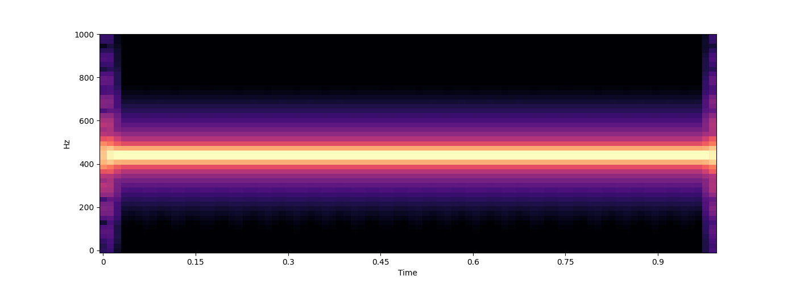
- 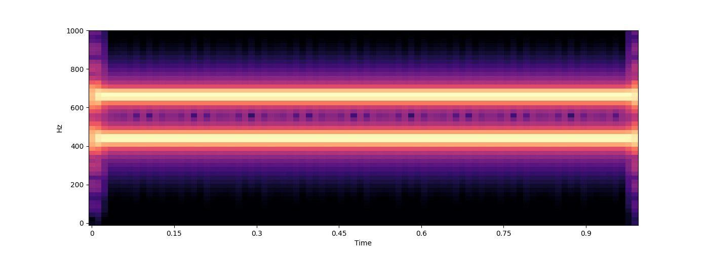
- 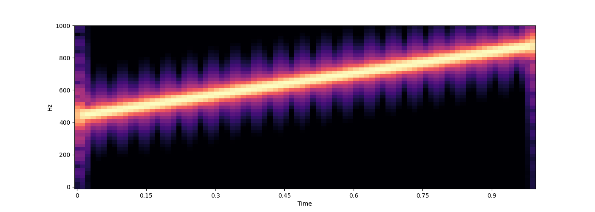
- 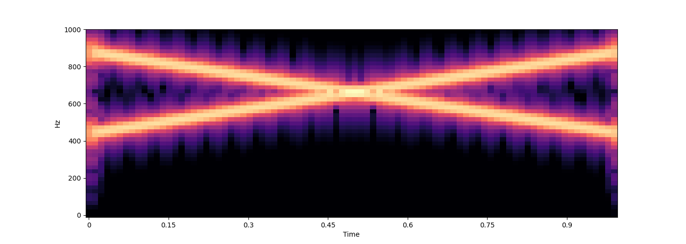
- 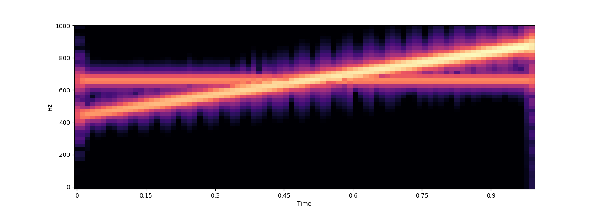
<IPython.lib.display.Audio object>
<IPython.lib.display.Audio object>
<IPython.lib.display.Audio object>
<IPython.lib.display.Audio object>
<IPython.lib.display.Audio object>
Total running time of the script: (0 minutes 37.187 seconds)